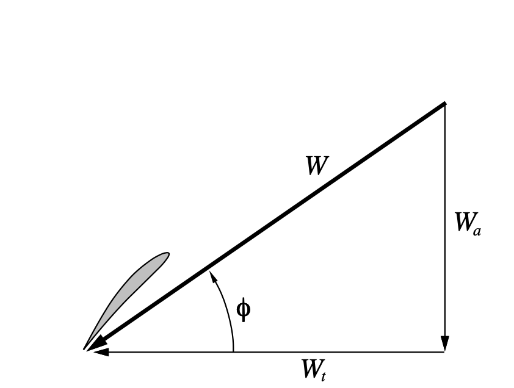
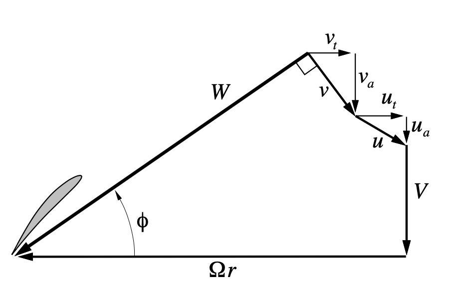

gvcalc.f
Contents
gvcalc.f¶
This routine is the heart of the propeller performance calculation. The theory behind the calculations in this routine can be found in the qprop_theory.txt file available on the QProp website* [Qprop Theory]https://web.mit.edu/drela/Public/web/qprop/qprop_theory.pdf().
Here are the input parameters:
C Input CHORD local blade chord
C BETA local blade angle (radians)
C R local radius
C
C BLDS number of blades
C RAD tip radius (for Prandtl's factor)
C VEL forward flight speed
C OMG rotational speed (radians/time)
C VSO speed of sound
C
C CL0 constants for CL(alpha,M) function
C DCLDA
C CLMIN
C CLMAX
C MCRIT
The output parameters are listed next:
C Output GAM circulation
C VA axial induced velocity
C VT tangential induced velocity
C CL section lift coefficient
C STALL T if alpha is outside stall limits
C LCONV F if iteration did not converge
C
C ()_VEL derivatives d()/dVEL
C ()_OMG derivatives d()/dOMG
C ()_CH derivatives d()/dCHORD
C ()_BE derivatives d()/dBETA
From the theory doc, here are two figures that detail the velocity conponents around a secion of the propeller at a radius R from the axis:
 {kind=link}
{kind=link}
In these figures, these equations hold:
Where:
V is the free-stream velocity (VEL)
r is the radial position of the blade section
\(\Omega\) is the rotation rate of the propeller (OMG)
For our rubber powered models the values of \(u_q\) ns \(u_t\) are bith zero since they are related to possible upstream systems, like counter rotating propellers.
The calculations are carried out for one specific radial position specified by the input R value. That means this routine will be called for each radial position ot complete the propeller analysis.
Psi Iteration¶
The basic logic incolved performing a Newton’s Iteration to find the value of “math”Psi for this radial position. The input data provides the needed aerodynamic properties for the blade at this location.
Newton’s method assumes the existence of a function the describes the property needed (:math::Psi). We are interested in calculating the value of this function at a specified value of he dependent variable. We start with an initial guess for the solution and calculate the next solution based on the ratio of the function and its derivative at that initial point. The solution proceeds by repeating this calculation using the first result as the next guess. If the function is smooth and the initial guess is close enough, this scheme converges quickly. guess. Here is the scheme:
Successive guesses follow the same pattern:
The nitial guess is set as the maximum of these two values:
Here is the complete source file:
C***********************************************************************
C Module: gvcalc.f
C
C Copyright (C) 2003 Mark Drela
C
C This program is free software; you can redistribute it and/or modify
C it under the terms of the GNU General Public License as published by
C the Free Software Foundation; either version 2 of the License, or
C (at your option) any later version.
C
C This program is distributed in the hope that it will be useful,
C but WITHOUT ANY WARRANTY; without even the implied warranty of
C MERCHANTABILITY or FITNESS FOR A PARTICULAR PURPOSE. See the
C GNU General Public License for more details.
C
C You should have received a copy of the GNU General Public License
C along with this program; if not, write to the Free Software
C Foundation, Inc., 675 Mass Ave, Cambridge, MA 02139, USA.
C***********************************************************************
SUBROUTINE GVCALC(CHORD,BETA,R,
& BLDS,RAD,VEL,OMG,VSO,
& CL0,DCLDA,CLMIN,CLMAX,MCRIT,
& GAM,GAM_VEL,GAM_OMG,GAM_CH,GAM_BE,
& VA, VA_VEL, VA_OMG, VA_CH, VA_BE,
& VT, VT_VEL, VT_OMG, VT_CH, VT_BE,
& CL, CL_VEL, CL_OMG, CL_CH, CL_BE, STALL, LCONV)
IMPLICIT REAL (A-H,M,O-Z)
LOGICAL STALL, LCONV
C--------------------------------------------------------------
C Computes circulation and related section properties
C at one radial station. Uses local circulation/swirl
C relation with a modified Prandtl's tip fudge factor.
C Does not make light-loading approximations, and
C is consistent with actuator disk theory in the limit
C of zero forward velocity.
C
C Input CHORD local blade chord
C BETA local blade angle (radians)
C R local radius
C
C BLDS number of blades
C RAD tip radius (for Prandtl's factor)
C VEL forward flight speed
C OMG rotational speed (radians/time)
C VSO speed of sound
C
C CL0 constants for CL(alpha,M) function
C DCLDA
C CLMIN
C CLMAX
C MCRIT
C
C Output GAM circulation
C VA axial induced velocity
C VT tangential induced velocity
C CL section lift coefficient
C STALL T if alpha is outside stall limits
C LCONV F if iteration did not converge
C
C ()_VEL derivatives d()/dVEL
C ()_OMG derivatives d()/dOMG
C ()_CH derivatives d()/dCHORD
C ()_BE derivatives d()/dBETA
C--------------------------------------------------------------
C
DATA PI / 3.14159265 /
DATA EPS / 1.0E-6 /
cc DATA EPS / 1.0E-10 /
C
DATA MSQMAX / 0.9 /
C
C---- perturbation imposed axial and tangential velocities
U0A = 0.
U0T = 0.
C
C---- total imposed axial and tangential velocities
UA = VEL + U0A
UA_VEL = 1.0
UA_U0A = 1.0
C
UT = OMG*R - U0T
UT_OMG = R
UT_U0T = - 1.0
C
C---- geometric velocity
WZ = SQRT(UA**2 + UT**2)
WZ_VEL = (UA/WZ)*UA_VEL
WZ_OMG = (UT/WZ)*UT_OMG
C
C---- initial guess for Newton variable PSI
PSI1 = ATAN2(UA,UT)
PSI2 = BETA + CL0/DCLDA
PSI = MAX( PSI1 , PSI2 )
C
C---- Newton iteration for actual PSI
LCONV = .FALSE.
DO ITER = 1, 20
COSP = COS(PSI)
SINP = SIN(PSI)
C
C------ total axial and tangential velocities
WA = 0.5*UA + 0.5*WZ *SINP
WA_PSI = 0.5*WZ *COSP
WA_VEL = 0.5*UA_VEL + 0.5*WZ_VEL*SINP
WA_OMG = 0.5*WZ_OMG*SINP
C
WT = 0.5*UT + 0.5*WZ *COSP
WT_PSI = - 0.5*WZ *SINP
WT_VEL = 0.5*WZ_VEL*COSP
WT_OMG = 0.5*UT_OMG + 0.5*WZ_OMG*COSP
C
C------ modified Prandtl's F function
IF(WA.EQ.0.0) THEN
F = 1.0
F_PSI = 0.
F_VEL = 0.
F_OMG = 0.
C
ADW = 0.
ADW_PSI = 0.
ADW_VEL = 0.
ADW_OMG = 0.
C
ELSE
TSR = WT/WA * RAD/R
TSR_PSI = (WT_PSI * RAD/R - TSR*WA_PSI)/WA
TSR_VEL = (WT_VEL * RAD/R - TSR*WA_VEL)/WA
TSR_OMG = (WT_OMG * RAD/R - TSR*WA_OMG)/WA
C
FARG = 0.5*BLDS*(1.0-R/RAD)*TSR
FARG_TSR = 0.5*BLDS*(1.0-R/RAD)
FARG = MIN( FARG , 20.0 )
C
FEXP = EXP(-FARG)
FEXP_TSR = -FEXP*FARG_TSR
C
F = (2.0/PI) * ACOS(FEXP)
F_TSR = -(2.0/PI) / SQRT(1.0 - FEXP**2) * FEXP_TSR
C
F_PSI = F_TSR*TSR_PSI
F_VEL = F_TSR*TSR_VEL
F_OMG = F_TSR*TSR_OMG
C
ADW = 1.0 /TSR
ADW_PSI = -TSR_PSI/TSR**2
ADW_VEL = -TSR_VEL/TSR**2
ADW_OMG = -TSR_OMG/TSR**2
C
ENDIF
C
C------ axial and tangential induced velocities
VA = WA - UA
VA_PSI = WA_PSI
VA_VEL = WA_VEL - UA_VEL
VA_OMG = WA_OMG
C
VT = UT - WT
VT_PSI = - WT_PSI
VT_VEL = - WT_VEL
VT_OMG = UT_OMG - WT_OMG
C
C------ circulation
QBI = 4.0/BLDS
PIR = SQRT((PI*R)**2 + (QBI*RAD*ADW)**2)
PIR_ADW = (QBI*RAD)**2*ADW/PIR
PIR_PSI = PIR_ADW*ADW_PSI
PIR_VEL = PIR_ADW*ADW_VEL
PIR_OMG = PIR_ADW*ADW_OMG
C
GAM = QBI* F*VT *PIR
GAM_PSI = QBI*(F*VT_PSI + F_PSI*VT)*PIR + QBI*F*VT*PIR_PSI
GAM_VEL = QBI*(F*VT_VEL + F_VEL*VT)*PIR + QBI*F*VT*PIR_VEL
GAM_OMG = QBI*(F*VT_OMG + F_OMG*VT)*PIR + QBI*F*VT*PIR_OMG
C
C------ total velocity
WSQ = WA**2 + WT**2
W = SQRT(WSQ)
W_PSI = (WA*WA_PSI + WT*WT_PSI)/W
W_VEL = (WA*WA_VEL + WT*WT_VEL)/W
W_OMG = (WA*WA_OMG + WT*WT_OMG)/W
C
C------ angle of attack
A = BETA - ATAN2(WA,WT)
A_PSI = (-WT*WA_PSI + WA*WT_PSI)/WSQ
A_VEL = (-WT*WA_VEL + WA*WT_VEL)/WSQ
A_OMG = (-WT*WA_OMG + WA*WT_OMG)/WSQ
A_BE = 1.0
C
C------ local Mach and PG factor
MSQ = WSQ / VSO**2
MSQ_PSI = 2.0*W*W_PSI / VSO**2
MSQ_VEL = 2.0*W*W_VEL / VSO**2
MSQ_OMG = 2.0*W*W_OMG / VSO**2
IF(MSQ .GT. MSQMAX) THEN
MSQ = MSQMAX
MSQ_PSI = 0.
MSQ_VEL = 0.
MSQ_OMG = 0.
ENDIF
C
PG = 1.0 / SQRT(1.0 - MSQ)
PG_MSQ = 0.5*PG / (1.0 - MSQ)
C
PG_PSI = PG_MSQ*MSQ_PSI
PG_VEL = PG_MSQ*MSQ_VEL
PG_OMG = PG_MSQ*MSQ_OMG
C
C------ CL(alpha,Mach) function
CL = (DCLDA*A + CL0)*PG
CL_PSI = DCLDA*A_PSI *PG + (DCLDA*A + CL0)*PG_PSI
CL_VEL = DCLDA*A_VEL *PG + (DCLDA*A + CL0)*PG_VEL
CL_OMG = DCLDA*A_OMG *PG + (DCLDA*A + CL0)*PG_OMG
CL_BE = DCLDA*A_BE *PG
C
STALL = .FALSE.
IF (CL.GT.CLMAX) THEN
STALL = .TRUE.
ACL0 = CL0/DCLDA
C
CL = CLMAX*COS(A-ACL0)
CL_A = -CLMAX*SIN(A-ACL0)
C
CL_PSI = CL_A*A_PSI
CL_VEL = CL_A*A_VEL
CL_OMG = CL_A*A_OMG
CL_BE = CL_A*A_BE
ELSEIF(CL.LT.CLMIN) THEN
STALL = .TRUE.
ACL0 = CL0/DCLDA
C
CL = CLMIN*COS(A-ACL0)
CL_A = -CLMIN*SIN(A-ACL0)
C
CL_PSI = CL_A*A_PSI
CL_VEL = CL_A*A_VEL
CL_OMG = CL_A*A_OMG
CL_BE = CL_A*A_BE
ENDIF
C
C------ Newton residual
RES = GAM - 0.5*CHORD* CL*W
RES_PSI = GAM_PSI - 0.5*CHORD*(CL*W_PSI + CL_PSI*W)
RES_VEL = GAM_VEL - 0.5*CHORD*(CL*W_VEL + CL_VEL*W)
RES_OMG = GAM_OMG - 0.5*CHORD*(CL*W_OMG + CL_OMG*W)
RES_CH = - 0.5* CL*W
RES_BE = - 0.5*CHORD* CL_BE *W
C
c write(*,*)
c write(*,*) psi*180/pi, wa, wt
c write(*,*) beta*180/pi,ATAN2(WA,WT)*180/pi,a*180/pi
c write(*,*) w, w_psi, w_vel, w_omg
c Write(*,*) cl, cl_psi, cl_vel, cl_omg
c Write(*,*) res, res_psi, res_vel, res_omg
c pause
C------ Newton change
DPSI = -RES/RES_PSI
DPSI = MAX( -0.1 , MIN ( 0.1 , DPSI ) )
c if(iter.gt.10) then
c write(*,9922) iter, r, cl, psi, dpsi
c 9922 format(1x,i4, 3f12.5, e13.4)
c endif
C------ exit if converged
IF(ABS(DPSI) .LT. EPS) THEN
LCONV = .TRUE.
GO TO 50
ENDIF
C
C------ Newton update
PSI = PSI + DPSI
ENDDO
WRITE(*,*) 'GVCALC: Not converged. Res a CL =', RES, A, CL
C
C-----------------
50 CONTINUE
C
C---- set PSI derivatives w.r.t. input parameters using d(RES)=0 condition
PSI_VEL = -RES_VEL/RES_PSI
PSI_OMG = -RES_OMG/RES_PSI
PSI_CH = -RES_CH /RES_PSI
PSI_BE = -RES_BE /RES_PSI
C
C---- set derivatives of all outputs
GAM_VEL = GAM_VEL + GAM_PSI*PSI_VEL
GAM_OMG = GAM_OMG + GAM_PSI*PSI_OMG
GAM_CH = GAM_PSI*PSI_CH
GAM_BE = GAM_PSI*PSI_BE
C
VA_VEL = VA_VEL + VA_PSI*PSI_VEL
VA_OMG = VA_OMG + VA_PSI*PSI_OMG
VA_CH = VA_PSI*PSI_CH
VA_BE = VA_PSI*PSI_BE
C
VT_VEL = VT_VEL + VT_PSI*PSI_VEL
VT_OMG = VT_OMG + VT_PSI*PSI_OMG
VT_CH = VT_PSI*PSI_CH
VT_BE = VT_PSI*PSI_BE
C
CL_VEL = CL_VEL + CL_PSI*PSI_VEL
CL_OMG = CL_OMG + CL_PSI*PSI_OMG
CL_CH = CL_PSI*PSI_CH
CL_BE = CL_BE + CL_PSI*PSI_BE
C
RETURN
END ! GVCALC